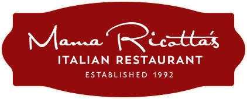
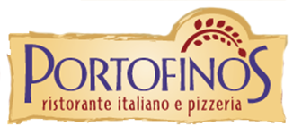

Mama Ricotta's
Mama Ricotta’s is an Italian pizza restaurant. It is rated number 16 out of all the restaurants in Charlotte on TripAdvisor. Some of its food includes their spaghetti and meatballs and lasagna.
Maggiano's Little Italy
Maggiano’s Little Italy is a vegetarian friendly Italian restaurant. With its slogan COME HOME TO ITALY, it provides authentic Italian food. Some of their food includes chicken parmesan, spaghetti, and salads.
Portofino's Italian Restaurant
Portofino’s is a casual Italian restaurant in eastern Charlotte. Some of the food it includes are pasta puttanesca and pizza. It also has many vegetarian options.
